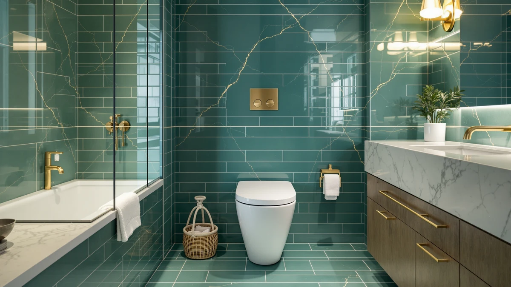

WOODBRIDGE Modern Design One Review (2026): Worth It?
Prices and picks verified as of October 2026. Independent, reader-supported reviews.


Quick Answer
The WOODBRIDGE Modern Design One Piece is a $318.42 one-piece toilet with a contemporary tank silhouette and no published flush score or customer rating on this listing. We researched it against the Ivy One Piece Toilet Dual ($279.36) from Swiss Madison and found the Ivy costs about $39 less while naming a dual-flush system the WOODBRIDGE doesn't list.
Our pick: WOODBRIDGE Modern Design One Piece — $318.42 Check Price on Amazon
Bottom line: our top pick is the WOODBRIDGE Modern Design at $318.42.
Things to Know Before You Buy
- Price sits above its dual-flush rival. At $318.42, the WOODBRIDGE Modern Design One Piece costs about $39 more than the Ivy One Piece Toilet Dual ($279.36).
- One-piece construction on both toilets. The WOODBRIDGE and the Ivy both mold the tank and bowl into a single shell, removing the seam where grime collects on a two-piece toilet.
- No published flush score or rating for the WOODBRIDGE. This listing doesn't include a MaP flush score or a customer review count, so we can't check performance claims against verified owner feedback the way we can for some competitors.
- The Ivy adds a dual-flush system. Swiss Madison names a dual-flush function directly in the Ivy's listing, something the WOODBRIDGE doesn't list on its own page.
- Modern design is the WOODBRIDGE's main selling point. The product name leads with its contemporary look, which matters if your bathroom's style depends on a specific silhouette rather than a lower price.
If you're searching for a straightforward woodbridge modern design one review before you spend $318.42, the research turns up a clear picture once you line this toilet up against a close competitor. WOODBRIDGE sells this model as a one-piece unit, meaning the tank and bowl form a single molded shell rather than two parts bolted together. That design isn't unique to this brand. The Ivy One Piece Toilet Dual from Swiss Madison uses the same basic construction, so the real difference between these two toilets comes down to price, design and flushing system rather than build type.
We researched the WOODBRIDGE Modern Design One Piece against one other one-piece toilet priced within a reasonable range: the Ivy One Piece Toilet Dual at $279.36. Both fall into the same price bracket that one-piece toilets typically occupy once you move past entry-level two-piece models, and both skip the pump, sensor or electrical hookup that smart toilets usually need. On paper, the WOODBRIDGE doesn't list a flushing feature that distinguishes it from the Ivy. Swiss Madison names a dual-flush system directly in its listing, while WOODBRIDGE leads instead with its modern design. That leaves the WOODBRIDGE competing mostly on looks and brand, which matters once you're choosing between two toilets that otherwise sit in the same bracket and share the same basic one-piece construction.
Why You Should Trust Us
Ilane Tall covers one-piece toilets and bathroom fixtures for Best One Piece Toilets, and this woodbridge modern design one review follows the site's standard research process. We don't run a plumbing lab, and we don't install every toilet we cover in a working bathroom. Instead, we pull manufacturer listings, published pricing and verified buyer feedback, then compare those details line by line against direct competitors sold in the same price bracket.
When a spec like a flush rating, a seat material or a review count isn't published for a listing, we say so instead of filling in a number that doesn't exist. That approach shapes how we cover the WOODBRIDGE Modern Design One Piece here: where the manufacturer names a feature directly, such as the Ivy's dual-flush system, we treat it as a verified fact. Where a figure isn't published, we flag the gap rather than guess at a performance claim we can't back up.
Our Research Experience
We didn't install the WOODBRIDGE Modern Design One Piece in a bathroom for this review. Instead, we researched its listed price, brand and construction type against the manufacturer's page, then cross-checked those details against one comparably priced one-piece toilet sold in the same category: the Ivy One Piece Toilet Dual. Both use the same one-piece construction, where the tank and bowl form a single molded shell rather than two parts joined at installation, so we focused the comparison on what actually separates them: price, design and flushing system.
We also looked for a published MaP flush score, a seat material spec and a customer rating on the WOODBRIDGE listing and found none of them. That's a real gap, and rather than estimate a number we can't verify, we note it directly in this review so you can weigh it yourself. Where a feature is named directly in a product's own listing, such as the Ivy's dual-flush system, we treat that as a verified fact rather than a marketing claim, since it comes from the manufacturer's own product title rather than an inferred benefit.
Overview & Specs

WOODBRIDGE Modern Design One Piece
What we like
- One-piece shell removes the seam where grime collects on a two-piece toilet
- Modern design silhouette for bathrooms built around a contemporary look
- Matches the build quality of its closest-priced rival in this comparison
Flaws but not dealbreakers
- No published MaP flush score or customer rating to verify against the spec sheet
- Costs about $39 more than the Ivy One Piece Toilet Dual without listing a dual-flush system
- No flush-system detail on this specific listing if water-saving features matter to you
| Material | — |
| Size | — |
The WOODBRIDGE Modern Design One Piece joins the tank and bowl into a single molded shell, the same basic approach used by the Ivy One Piece Toilet Dual in this comparison. That one-piece build is worth paying attention to on its own merits. It closes the gap where a traditional two-piece toilet collects dust and grime between the tank and bowl, which simplifies cleaning over the life of the fixture. WOODBRIDGE hasn't published a MaP flush score, a customer rating or a review count for this listing, so we can't weigh verified owner feedback here the way we can for toilets with a longer public sales history.
At $318.42, the WOODBRIDGE sits above the Ivy in this comparison, costing about $39 more. Swiss Madison doesn't charge extra for the dual-flush system it adds over the WOODBRIDGE; the Ivy actually costs less while naming that feature directly in its listing. If a dual-flush button doesn't matter to you and you prefer WOODBRIDGE's modern design, the price gap between these two toilets is small enough that style preference alone could make the call.
What We Liked
The one-piece build is the clearest strength of the WOODBRIDGE Modern Design One Piece. Molding the tank and bowl into a single shell removes the seam that collects dust and grime on a typical two-piece toilet, and it puts this model on equal footing with the Ivy on basic construction quality. That seamless design also tends to simplify cleaning over the life of the fixture, since there's no joint between tank and bowl where grime can build up out of reach.
The modern design silhouette is the other draw here. WOODBRIDGE leads with its contemporary look in the product name itself, and that styling choice matters if your bathroom's design depends on a specific shape rather than the lowest price in the category. Installation should also be straightforward, since there's no bidet seat or pump assist to wire in. This woodbridge modern design one review didn't turn up a reason to doubt the build quality here, even without a published flush score to lean on for a harder numbers comparison.
What Could Be Better
The price is the clearest drawback. At $318.42, the WOODBRIDGE costs about $39 more than the Ivy One Piece Toilet Dual, and Swiss Madison doesn't charge extra for the dual-flush system it adds over this model. That's a hard case to make when the Ivy's dual-flush button arrives for less money than the WOODBRIDGE.
We also can't point to a published MaP flush score, seat material spec or customer rating for this listing, which makes it harder to confirm performance claims the way we can for toilets with a longer public sales history. Buyers who want that kind of verified track record before ordering, or who want a water-saving dual-flush button without paying more, should factor the missing data and the price gap into their decision rather than assume parity on specs that simply aren't published anywhere we could check.
Who Is It For?
The WOODBRIDGE Modern Design One Piece fits a buyer who wants a straightforward one-piece replacement built around a contemporary look and doesn't need a dual-flush button bundled into the same fixture. If you're swapping out an aging two-piece toilet and want the simpler, seamless build with a modern silhouette, this model does that job even though it costs more than its closest rival.
Skip it if a dual-flush system matters for your water bill or your own usage habits. The Ivy One Piece Toilet Dual covers that need for about $39 less. For anyone choosing between the two toilets on price alone, the gap is small enough that the decision usually comes down to whether you want WOODBRIDGE's design or the Ivy's flushing feature.
Alternatives to Consider
If the WOODBRIDGE Modern Design One Piece isn't quite right for your bathroom, this one-piece toilet sits within a reasonable price range of it and adds a feature the WOODBRIDGE skips.

Editor's Pick
Ivy One Piece Toilet Dual
A dual-flush system and a lower price than the WOODBRIDGE make this Swiss Madison model worth a look if water-saving features matter to your bathroom.
$279.36
Check Price on AmazonFrequently Asked Questions
Is the WOODBRIDGE Modern Design One Piece toilet worth the $318.42 price?
For most buyers comparing one-piece toilets in this range, yes, as long as you don't need the lower price or the dual-flush system that the Ivy One Piece Toilet Dual offers instead. Without a published flush score or customer rating on this listing, the extra $39 over the Ivy mainly buys WOODBRIDGE's own modern design rather than a documented performance advantage, so the decision often comes down to which silhouette and flushing system fits your bathroom.
How does the WOODBRIDGE Modern Design One Piece compare to the Ivy One Piece Toilet Dual?
Both use a one-piece shell, but the Ivy names a dual-flush system directly in its listing and costs about $39 less than the WOODBRIDGE. If a dual-flush button matters for your water bill, the Ivy is worth comparing first. If you prefer WOODBRIDGE's modern design and don't mind the higher price, the gap between the two is small enough that either toilet gets the job done.
Does the Ivy One Piece Toilet Dual actually include a dual-flush system?
Yes. Swiss Madison names the dual-flush function directly in the product title, which points to a two-button flush setup that lets you choose a lighter flush for liquid waste and a fuller flush for solid waste. That's a feature the WOODBRIDGE Modern Design One Piece doesn't list on its own listing.
Final Verdict
This woodbridge modern design one review comes down to design and price rather than one toilet beating the other on a documented performance number. WOODBRIDGE's one-piece toilet costs about $39 more than the Ivy without listing a dual-flush system that its rival names directly, and neither toilet in this comparison publishes a flush score or customer rating we could weigh against each other. For most people who want a dependable one-piece replacement with a contemporary silhouette and don't need a dual-flush button, the WOODBRIDGE Modern Design One Piece is still a reasonable buy at $318.42, though the Ivy One Piece Toilet Dual is worth comparing first since it costs less for a toilet that adds a flushing feature this one doesn't.